Main features¶
The following screenshots show some interesting features such as editing lists, strings, dictionaries, NumPy arrays, or plotting/showing NumPy arrays data.
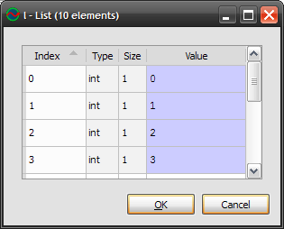 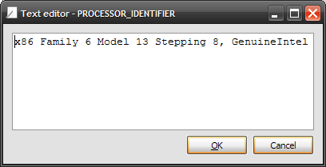 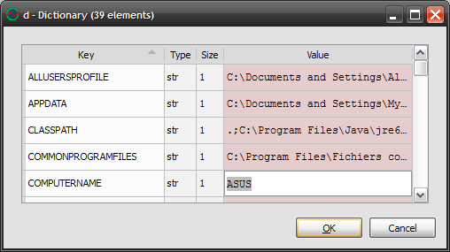 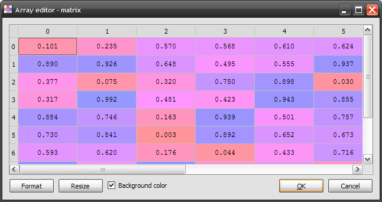 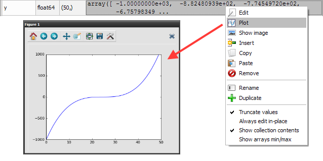 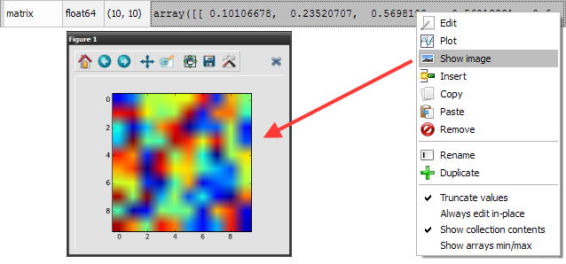The workspace is a global variable browser for the Interactive Console with the features described below.
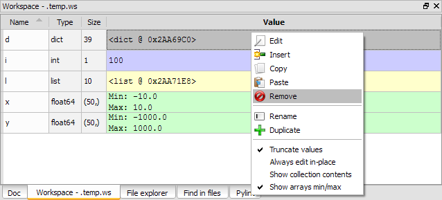The following screenshots show some interesting features such as editing lists, strings, dictionaries, NumPy arrays, or plotting/showing NumPy arrays data.
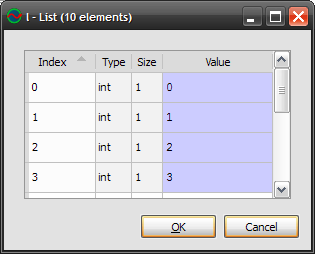 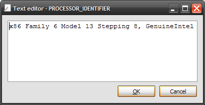 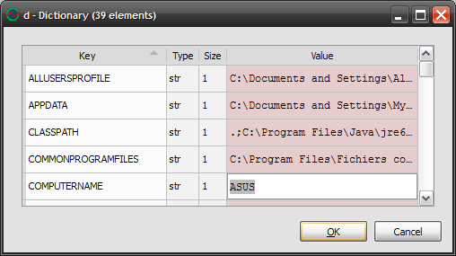 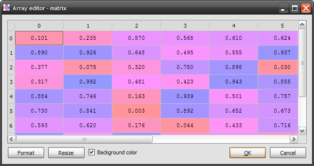 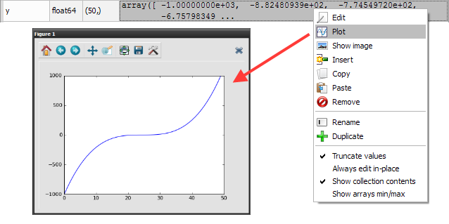 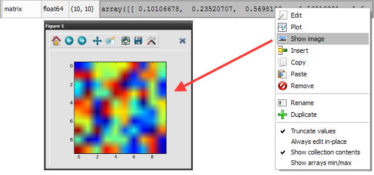The default Workspace configuration allows to browse global variables without slowing the interactive console even with very large NumPy arrays, lists or dictionaries. The trick is to truncate values, to hide collection contents (i.e. showing ‘<list @ address>’ instead of list contents) and to show only mininum and maximum values for NumPy arrays (see context menu options on the screenshot at the top of this page).
However, most of the time, choosing the opposite options won’t have too much effect on interactive console’s performance:
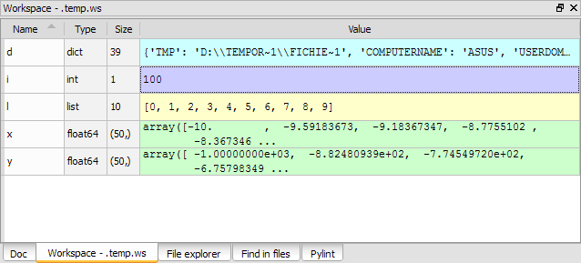